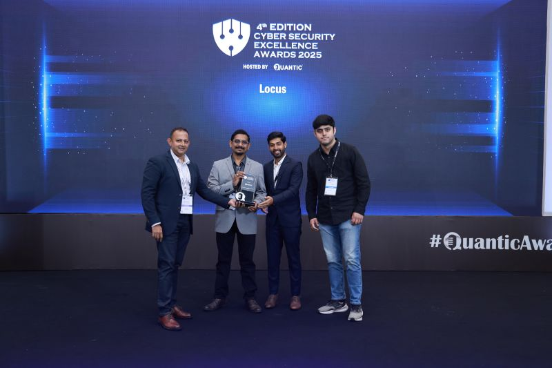
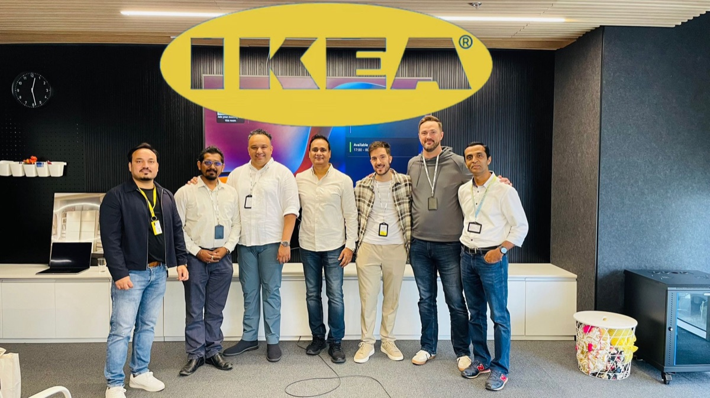
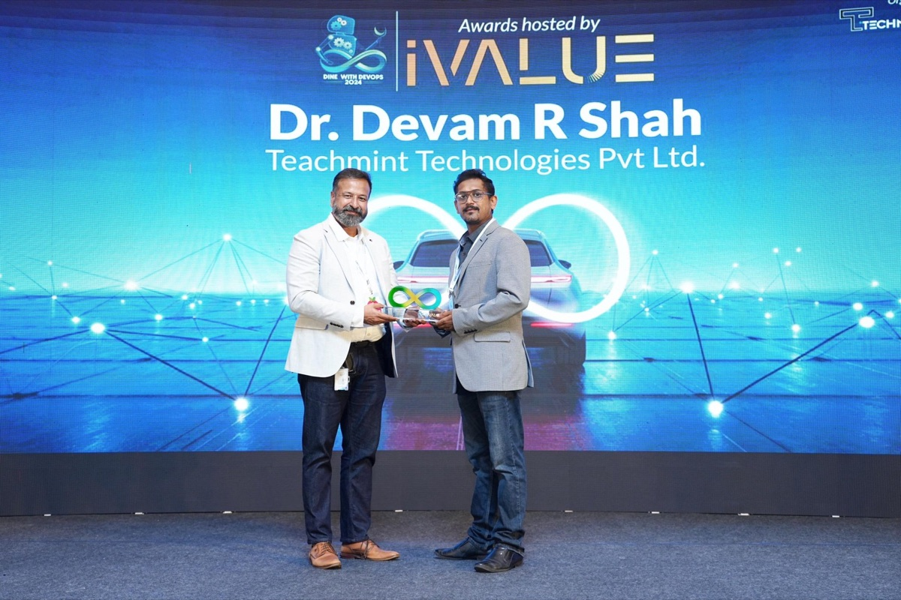
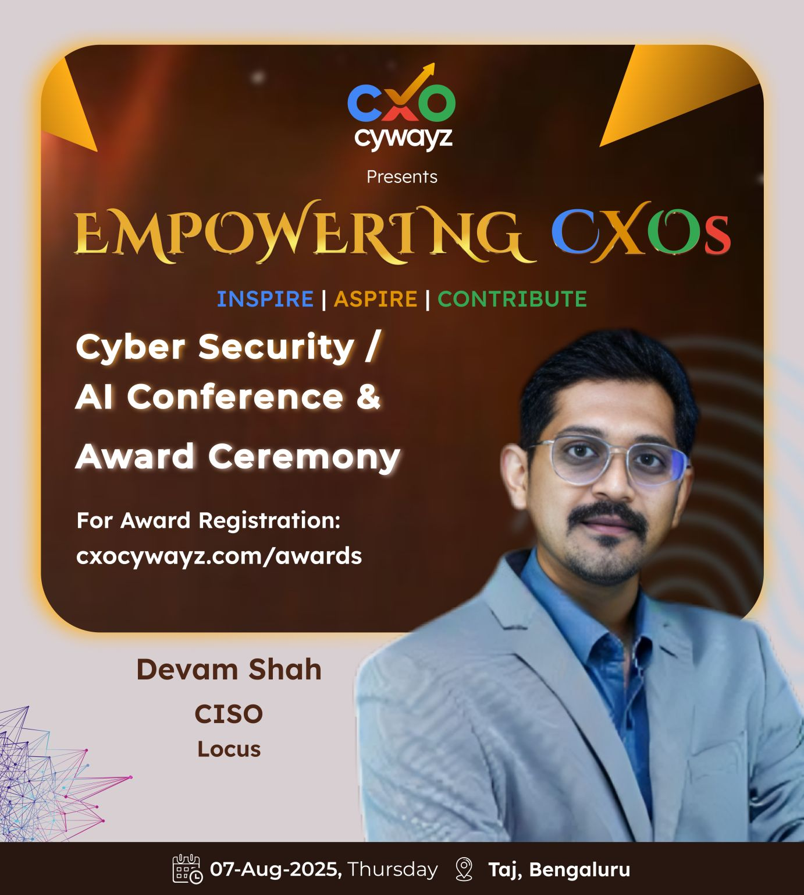

AI Security & Governance
Establishing AI security governance for AI-assisted development pipelines. Embedding agentic AI into SecOps and GRC workflows using Claude Code, Snyk MCP, CodeRabbit, and custom tooling.
A decade of building and defending. I've secured AI platforms serving 1.5B+ deliveries, protected 35M+ student records across 33 countries, and treated 1 million+ vulnerabilities across enterprise environments. I drive an AI-first approach to security leadership — embedding automation into operations and translating cyber risk into board-level business strategy.
A decade building global security, privacy, and cyber risk programs across AI SaaS, healthcare, logistics, edtech, robotics, and cloud-native platforms. AI-first approach to security — embedding automation into operations and translating cyber risk into board-level business strategy.
The hardest security problems aren't technical — they're organizational. Brought in to stabilize companies during active breaches and ransomware incidents. Built incident response and 24x7 SOC operations from scratch. Led post-acquisition security due diligence for global enterprises. Every role has started with a hard problem and ended with a resilient organization.
Ships production-grade Python security tooling, builds open-source Slack bots with Claude API, designs AI product architectures from first principles. Built entire AppSec pipelines using open-source tooling — eliminating enterprise licensing costs. The best security leaders understand what they're protecting because they've built things themselves.
"The wise warrior avoids the battle."— Sun Tzu, The Art of War
The best security is invisible. It prevents the incident from ever existing. Proactive architectures, quiet resilience, systems that hold when tested.




Building security programs that scale with the business, powered by automation and AI. Click any domain to explore.
Establishing AI security governance for AI-assisted development pipelines. Embedding agentic AI into SecOps and GRC workflows using Claude Code, Snyk MCP, CodeRabbit, and custom tooling.
Automated vulnerability management across CI/CD. Building application security pipelines with open-source tooling — SAST, SCA, DAST, container scanning, IaC security, and secrets detection.
Led organisations to HITRUST, SOC 2 Type II, ISO 27001, ISO 27701, and HIPAA certifications. GDPR, DPDPA, COPPA compliance and data protection across 30+ jurisdictions and European operations.
Red-teaming, bug bounty programs, phishing-resistant identity architecture. Proven crisis leadership — managed PHI breaches, ransomware incidents, and enterprise-wide security transformations.
Zero Trust deployments, SOC buildouts processing millions of EPS, SIEM architecture, EDR/XDR, SASE, UEBA/CASB, and identity security across global enterprise environments.
A CISO who codes. Building security automation, custom AI tooling, and open-source security solutions. From Ansible playbooks to Python security bots to full-stack dashboards.
From bug bounty hunter to boardroom CISO — a decade of building and defending across 7 industries and 30+ jurisdictions.
Leading global security, privacy, and compliance for a cloud-native logistics platform across 30+ jurisdictions supporting 1.5B+ deliveries. Led post-acquisition security due diligence for Ingka Group (IKEA), driving remediation of 70,000+ SAST/SCA/OSS vulnerabilities. Delivered SOC 2 Type II, established AI security governance with automated guardrails, launched red-teaming and bug bounty programs. Lean team of 5, $1M budget — reducing late-stage vulnerabilities by 96%.
Led IT, Security, Privacy, and Compliance for a global edtech SaaS platform supporting 35M+ student records across 33 countries. Built the entire AppSec pipeline using open-source tooling (Semgrep, Trivy, OWASP ZAP, SonarQube) — eliminating enterprise licensing. Secured AI-enabled IoT ecosystem across 600+ schools with 4,500+ smart classrooms powered by 15,000+ customized devices.
Established global security and privacy across 100+ countries, 2,000+ employees, and 5,000+ contracted teachers. Led security integration during Byju's acquisition, aligning strategy with 300% annual growth. Deployed company-wide Zero Trust architecture. First-time ISO 27001 & ISO 27701 certifications enabling 50+ enterprise B2B deals with global banks, Big4, and Big Tech.
Appointed by Group Chairman to stabilize the organization during a major security crisis — managing a large-scale PHI breach and ongoing ransomware incidents. Built and led global security teams across 3 geographies (25+ professionals, 24x7 SOC). Secured OT/IoT environments for pharmaceutical robotics (30+ robotic platforms, 1,000+ sensors per system). Achieved HITRUST i1, SOC 2 Type II, ISO 27001, ISO 27701, and HIPAA.
Enterprise security governance and architecture across TCS data centers, cloud environments, and critical infrastructure — including the EKA supercomputer used for Indian defence and space research. Key role in corporate security modernization across 1,000+ remote offices. Enterprise incident response for critical infrastructure environments.
Looking for a security leader who's been in the trenches and speaks the boardroom's language?
Let's Talk LinkedInOpen-source tools, AI products, and frameworks — built in the open.
Open-source AI security scanner built in Python. Detects prompt injection vulnerabilities, insecure model loading, API key exposure, RAG pipeline leaks, and unsafe LLM output handling. Designed for CI/CD integration.
AI-powered criminal complaint builder for Indian citizens. 7-engine architecture, 6 specialised legal AI agents, proprietary word-level legal interpretation engine, and dual-verification system.
Open-source Slack bot that auto-classifies and routes security approval requests using AI. Built with Python, Slack SDK, Atlassian APIs, and the Claude API.
Proprietary methodology for building AI products at scale. 9-phase lifecycle, 7 quality gates, 8 development agents. Nyaya AI is the reference implementation.
Security tools should be transparent, community-driven, and accessible.
Curious about my experience, approach, or how I'd handle a specific challenge? Ask away.
Whether it's a board that needs cyber risk translated into business language, an AI platform that needs securing, or a crisis that needs steady hands — I've been there. Let's explore how I can help.